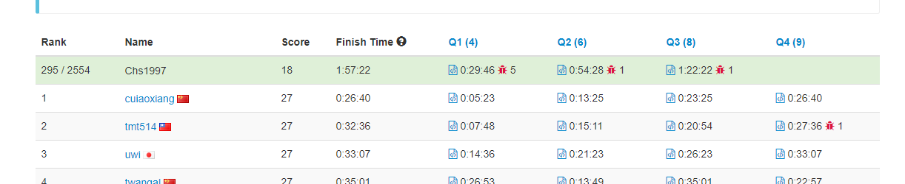
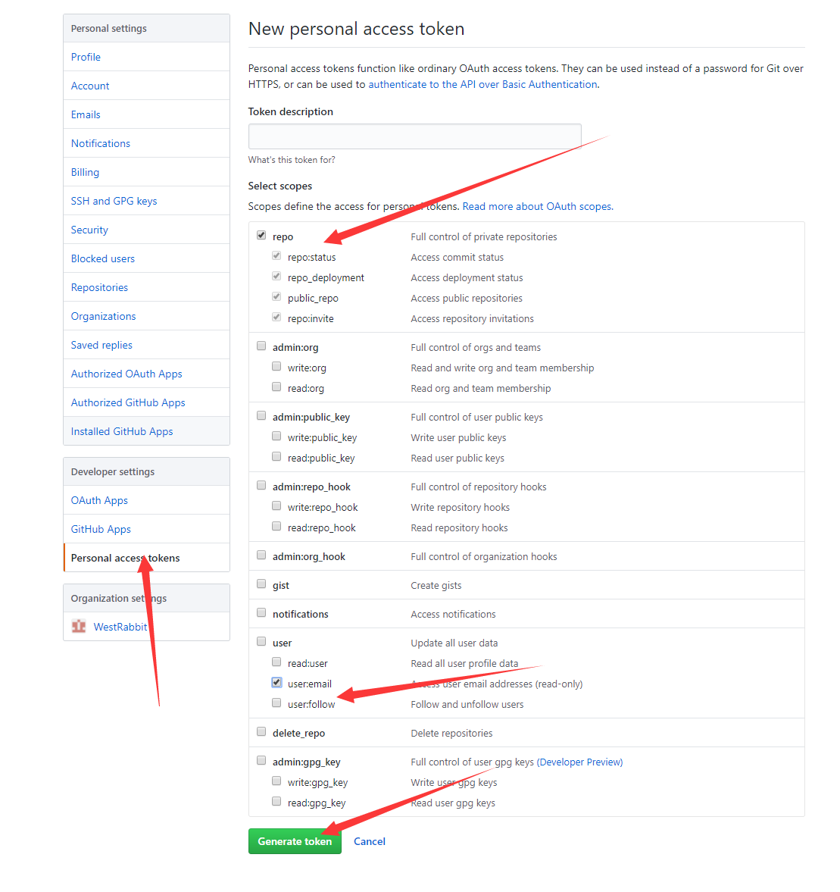
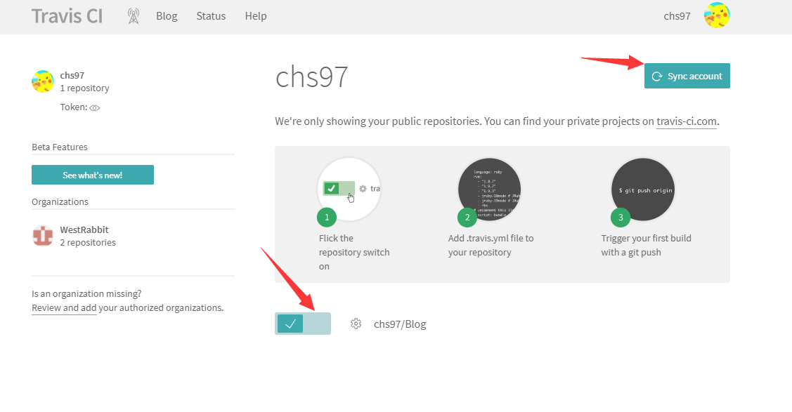
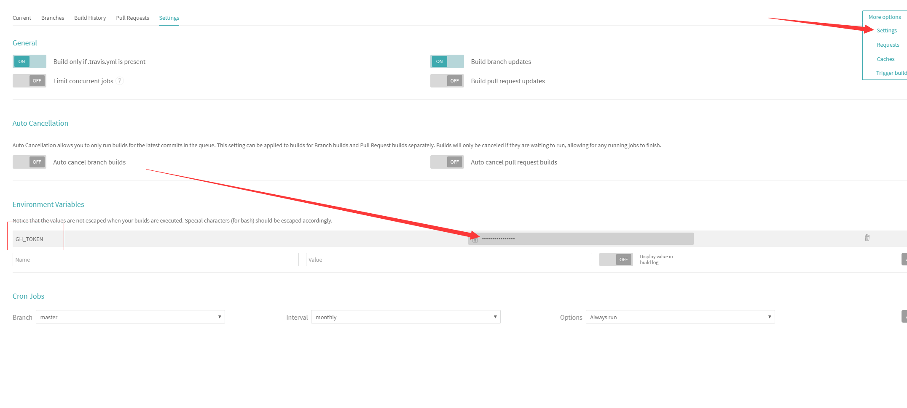

周末随笔
8 月的最后一个周末，966 的上班模式，有一天可以休息是很难得的，计划了一下要做的几件事 1. 9 点 30 分的 LeetCode 周赛，2. 把博客的 CI(持续集成)搭起来 3. 做软工的作业。在这过程中出现了一点小差错，只完成了前 2 件事情
一、Leetcode 周赛

A.Non-decreasing Array
Given an array with n integers, your task is to check if it could become non-decreasing by modifying at most 1 element.
We define an array is non-decreasing if array[i] <= array[i + 1] holds for every i (1 <= i < n).
Example 1:
1 | Input: [4,2,3] |
Example 2:
1 | Input: [4,2,1] |
Note: The n belongs to [1, 10,000].
题意：给定一个序列，能不能只修改一个数字，使得数列变成不下降序列
题解：必须使用 nlogn 复杂度才能过，n^2 T 了。
1 | /** |
B.Path Sum IV
If the depth of a tree is smaller than 5, then this tree can be represented by a list of three-digits integers.
For each integer in this list:
- The hundreds digit represents the depth
Dof this node,1 <= D <= 4. - The tens digit represents the position
Pof this node in the level it belongs to,1 <= P <= 8. The position is the same as that in a full binary tree. - The units digit represents the value
Vof this node,0 <= V <= 9.
Given a list of ascending three-digits integers representing a binary with the depth smaller than 5. You need to return the sum of all paths from the root towards the leaves.
Example 1:
1 | Input: [113, 215, 221] |
Example 2:
1 | Input: [113, 221] |
题意：用一个 3 位数的数字表示一个二叉树的节点，问这颗二叉树所有路径的和
题解：还原二叉树，dfs
1 | /** |
Given two integers n and k, you need to construct a list which contains n different positive integers ranging from 1 to n and obeys the following requirement:
Suppose this list is [a1, a2, a3, … , an], then the list [|a1 - a2|, |a2 - a3|, |a3 - a4|, … , |an-1 - an|] has exactly k distinct integers.
If there are multiple answers, print any of them.
Example 1:
1 | Input: n = 3, k = 1 |
Example 2:
1 | Input: n = 3, k = 2 |
Note:
- The
nandkare in the range 1 <= k < n <= 10^4.
题意：构造一个符合题意的数列
题解：？？？？无法证明的一个构造
1 | /** |
无法证明
二、使用 TravisCI + github 实现自动构建博客
1.hexo 文档
2.将 source 分支作为 hexo 资源的分支,master 作为构造以后静态文件的分支(方便使用 github page)
3.写 CI 配置文件
1 | language: node_js |
4._config.yml 添加如下代码
1 | deploy: |
5.生成 ACCESS TOKEN(github)
进入个人设置，如图所示
6.配置 GH_TOKEN


配置成功就能进行持续集成了
大坑：下载主题 next 丢到 theme 中，因为直接 git clone 所以主题文件夹 next 中有一个.git 文件夹，然后 push 不上去。add 文件的时候没提示 push 也没提示，travis 每次 build 都是 pass 但是有好几个页面都是空白的，以为是自己没配置好持续集成，所以搞了一下午，最后输了一下 git status 显示 modified: xxx(modified content, untracked content) 才发现这个问题。
删除.git 文件夹后，还是无法提交，并且 add 文件的时候会失败 这里有个解决方案
Removing the directory from git and adding it again worked for me:
2
3
> git add directory
>
This works if you purposefully removed the
.gitdirectory because you wanted to adddirectoryto your main git project. In my specific case, I had git cloned an extension and rangit add .without thinking too much. Git decided to create a submodule, which I didn’t like. So I removeddirectory/.gitand ran intoGit: fatal: Pathspec is in submodule. I couldn’t find out how to remove the submodule stuff. Fixed with the two lines above.
三、软工作业
只能先欠着了。